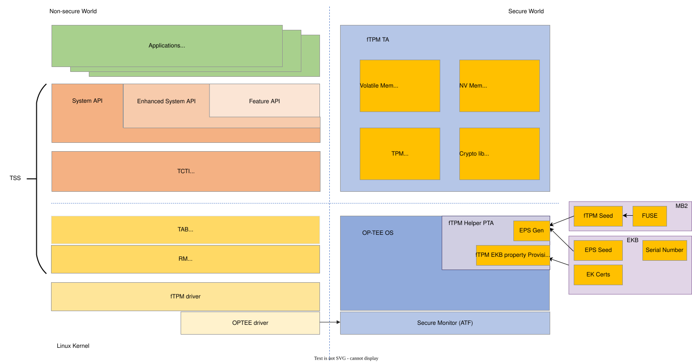
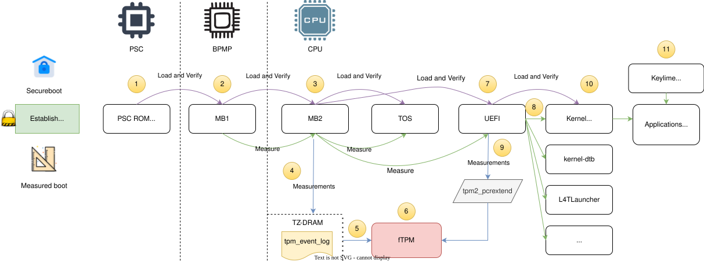
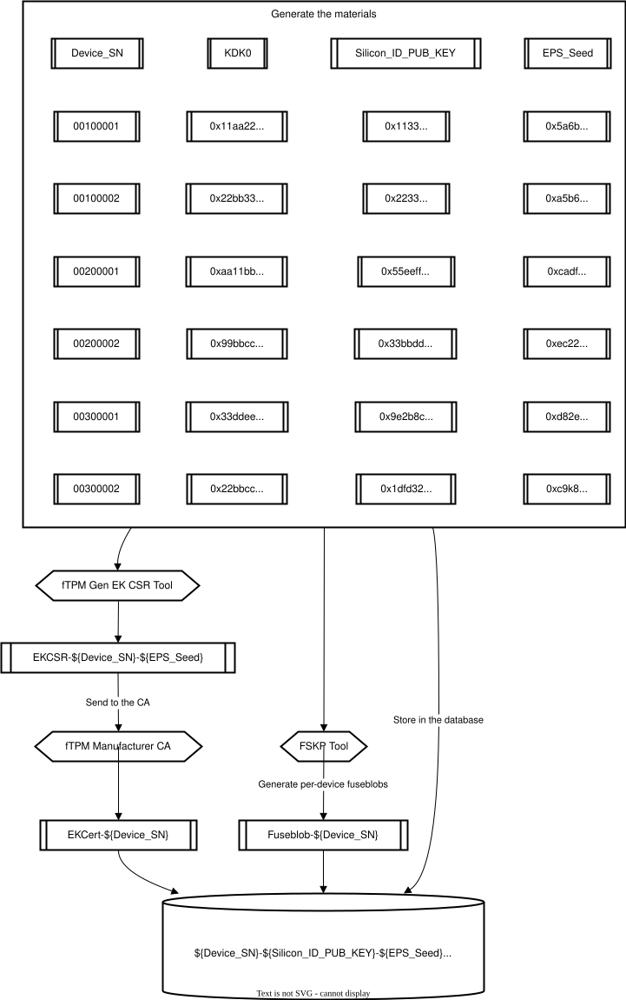
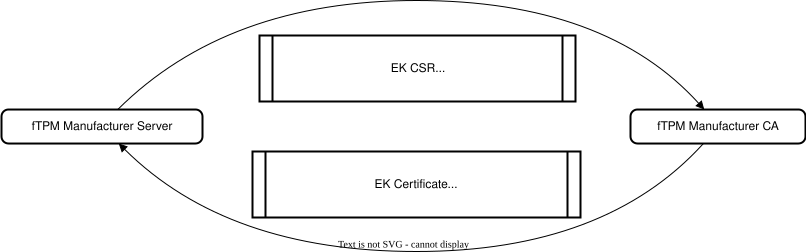
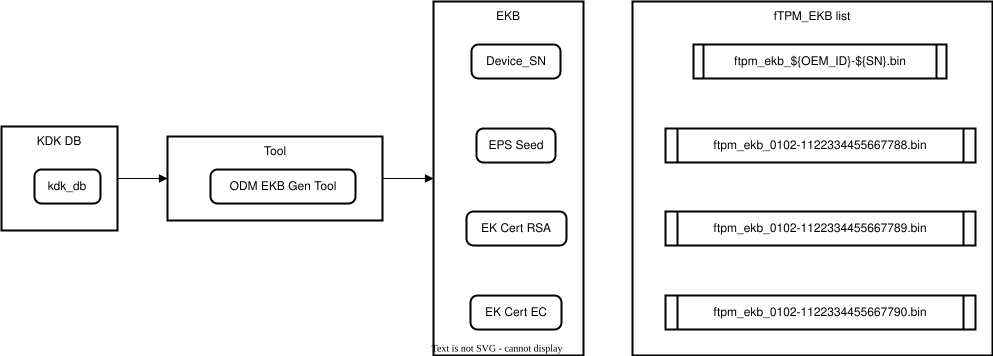
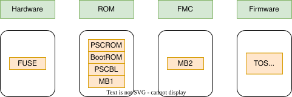
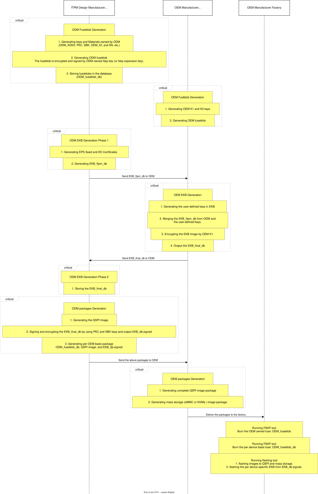
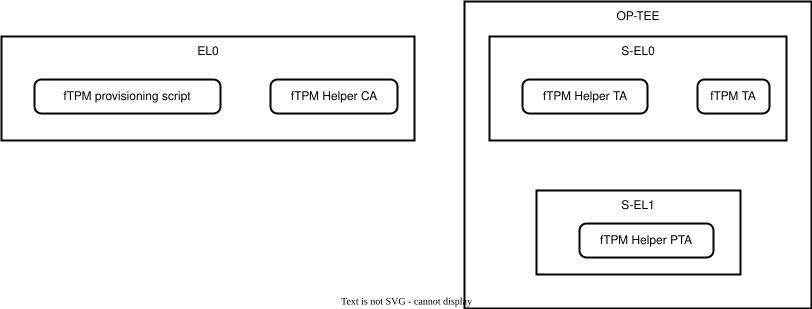
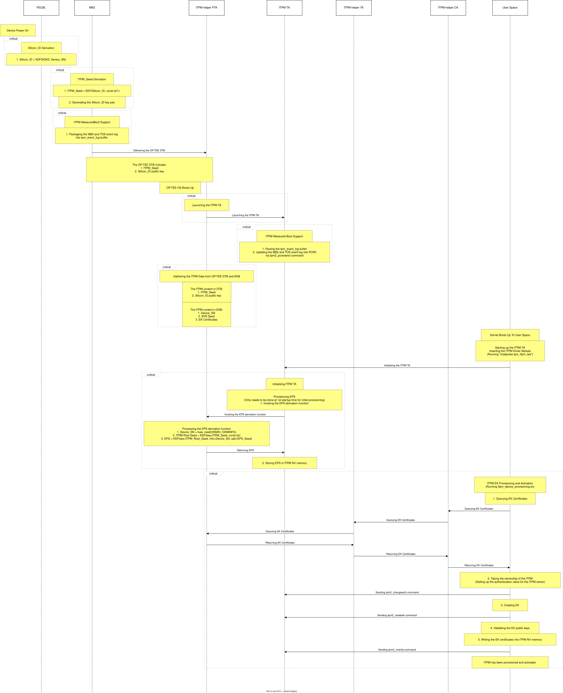

Firmware TPM#
Applies to the Jetson AGX Orin series, Jetson Orin NX series, and Jetson Orin Nano series.
Before you begin, please reference the TCG website to get familiar with the Trusted Platform Module (TPM) specification and knowledge.
The Firmware TPM (fTPM) implementation is done by leveraging the official TCG reference implementation of the TPM 2.0 specification. The reference implementation includes a sample fTPM Trusted Application (TA) and is designed to be executed with OP-TEE.
Software Architecture#
The TPM component, either fTPM or a hardware-based discrete TPM (DTPM), relies on the TPM Software Stack (TSS) to talk with the TPM. The fTPM software architecture includes a fTPM TA running in OP-TEE with the TSS support in the non-secure world.

Non-secure World#
The SW modules in the non-secure world:
TPM Software Stack (TSS): The user space applications depend on TSS to utilize the secure functionalities of the TPM. The open source implementation tpm2-software/tpm2-tss is available on GitHub and consists of three types of APIs:
System API (SAPI): SAPI provides low-level interfaces with 1-to-1 mapping to TPM 2.0 commands.
Enhanced System API (EAPI): EAPI is a higher-level interface than SAPI. It offers session management and cryptographic capabilities.
Feature API (FAPI): FAPI provides high-level abstraction APIs for application development. It is designed to meet most of the use cases for TPM usage.
TPM Command Transmission Interface (TCTI): TCTI is an abstraction command communication layer.
TPM Access Broker (TAB) and Resource Manager (RM): TAB and RM are software modules for multi-process management and context management in the Linux kernel.
TPM2 Tools: This is a set of TPM2 command tools that you can use it to control the TPM via command line interface (CLI). The open source implementation tpm2-tools is available on GitHub.
fTPM driver: The fTPM driver is a client application (CA) that receives the TPM command byte stream or Command Response Buffer (CRB) and bypasses the data to the fTPM TA in the secure world.
OP-TEE driver: The OP-TEE driver provides the TA/CA communication interface.
Secure World#
The SW modules in the secure world:
Secure Monitor: This is an S-EL3 firmware that helps handle the communication between secure and non-secure worlds.
OP-TEE OS: A Trusted OS (TOS) running in S-EL1 to provide security service in the TrustZone.
fTPM Helper PTA: The fTPM Helper PTA provides two major functions to support fTPM provisioning, EPS generation and EK certificate provisioning.
fTPM TA: The TA should implement TPM command functions and platform-dependent functions that meet the TCG TPM2 specification. The ms-tpm-20-ref reference implementation is available on GitHub.
MB2: The secure bootloader that helps derive the fTPM seed from the hardware fuse. The fTPM seed is a per-device, unique, secure value used for EPS generation.
EKB: The Encrypted Keyblob (EKB) packages the per-device unique properties for fTPM provisioning support.
The fTPM Boot Flow#

The fTPM boot flow is a process that verifies and measures the integrity of firmware components during the boot process.
fTPM Secure Boot#
Secure boot is an essential part of the fTPM boot flow. It ensures that only authorized firmware components are loaded during the boot process and establishes Hardware Root of Trust (HROT), Root of Trust for Reporting (RTR), and Root of Trust for Measurement (RTM). The purple line in the diagram shows the secure boot flow, which indicates that the boot components load and verify the next stage boot components.
The fTPM relies on secure boot to support a key derivation process to derive fTPM related secure values. You can refer to Key Derivation Process and Silicon ID Provisioning Flow.
fTPM Measured Boot#
Measured boot is another critical component of the fTPM boot flow. This involves measuring the code and data used at boot time, such as bootloaders, firmwares, and the kernel, to ensure they have not been tampered with.
Measured boot uses a TPM to store measurements of firmware components, which can be later verified to ensure the system has not been compromised.
The Measured Boot support of fTPM is based on the Platform Configuration Register (PCR). The PCR is a component of the TPM that plays a crucial role in ensuring the integrity and trustworthiness of a platform. A PCR is essentially a secure, tamper-proof storage location for hash values, which are used to verify the authenticity and consistency of various components within the boot chain.
The green line shows the boot components measuring the measurements of the next stage boot components. Before the fTPM is ready, the measurements can be stored in the format of TPM event log, which is a standard data structure to indicate the PCR and measurement you want to extend. During the fTPM boot process, it needs to handle the TPM event log to extend the PCR with the measurements. After fTPM brings up, all the measurements should go through the TPM2 PCR extend command only.
The fTPM Provisioning#
A fundamental difference exists between a DTPM and fTPM. A DTPM or a TPM chip has been provisioned by the TPM vendor or manufacturer with the Endorsement Key (EK) certificate, which is the TPM identification that can be used for TPM attestation. Without this certificate, the trust between the TPM user and the services that relies on TPM cannot be constructed.
To create a trustworthy fTPM entity on different devices, you need to provision it with a per-device unique ID, the EK certificate, and this needs to be done during the device manufacturing process.
The fTPM provisioning refers to the process of configuring and initializing a firmware-based TPM on a Jetson device.
fTPM provisioning involves three main steps:
Initialization: The fTPM TA is initialized by the Trusted OS (OP-TEE) during the early secure boot stage.
Configuration: The fTPM is configured with the settings such as Endorsement Primary Seed (EPS), EK certificate, owner password, and other parameters.
Key generation: The fTPM generates a unique EK and storage root key (SRK), which are used to secure sensitive data.
The fTPM provisioning process we designed to make the Jetson device deal with the fTPM manufacturer Certificate Authority (CA) server. This process needs the fTPM manufacturer to pre-generate the EK certificates and encode it into the Encrypted Keyblob (EKB). It needs to be completed during the device manufacturing process. When the device boots up, you need to run the provisioning tool to query the EK certificates from EKB and store them in the fTPM non-volatile (NV) memory.
There are two methods of provisioning methods: offline provisioning and online provisioning.
Offline provisioning method
The offline provisioning method needs the fTPM manufacturer to pre-generate the EK certificates and encode it into the Encrypted Keyblob (EKB). This process needs to be completed during the device manufacturing process. When the device boots up, you need to run the provisioning tool to query the EK certificates from EKB and store them in the fTPM non-volatile (NV) memory.
Online provisioning method
The online provisioning method depends on a three-way handshake protocol between the CA and the device, which validates the device’s identity in order to sign the EK Certificate Signing Request (CSR) and issue the EK certificate.
Note: For this release, only the offline provisioning method is supported. The online provisioning method will be available in the future fTPM release.
Preparation Before The fTPM Provisioning Process (Offline Method)#
The Prerequisites of the fTPM Vendor#
The fTPM vendor can be an ODM/OEM who manufactures a Jetson-based device and enables fTPM, or an end-customer who deploys the product and enables fTPM. Typically, the fTPM vendor does the following:
This role is identical to the DTPM vendor or manufacturer and is the Original Design Manufacturer (ODM) of the fTPM provisioning support.
It should be a third-party service provider with expertise in fTPM production. (Assuming that the Jetson device builder prefers to use a third-party service to sign and issue the fTPM EK certificates.)
It should be able to set up a secure environment to work with the fTPM provisioning process.
The CA server held by the fTPM vendor should be acknowledged by the popular cloud service provider with which devices are designed to be enrolled.
It should meet the requirements for preparing and generating materials for fusing the devices and keeping them secure.
It should support multiple Original Equipment Manufacturers (OEMs) which means that the fTPM vendor should work with multiple OEMs and maintain and isolate the materials for different OEMs.
The requirements of the material preparation and the generation work.
The per-device basis
KDK0,Device_SN,Silicon_ID, andSilicon_ID public keygeneration.
This can be done by running the
kdk_gen.pyKDK Gen tool, where:
KDK0is a secret per-device unique 256-bit random value.
SNis a per-device unique serial number.
OEM_IDis an OEM_ID number for different OEMs.
Device_SNis the concatenation of OEM_ID and SN where OEM_ID and SN are in the big-endian form.
The public key of Silicon_ID
This public key can be used for the fTPM provisioning tool to verify the materials signed by the Silicon_ID private key.
The public key is generated by Silicon_ID where:
Silicon_ID is KDF(key=KDK0, Device_SN).
The asymmetric key pair of Silicon_ID is ECC_P256_key_gen(seed=Silicon_ID).
The private key should be dropped immediately.
Note: The KDK0 should be discarded after the corresponding fuseblob, the EK, and the EK-associated certificate are generated. The purpose of not keeping it in storage is to avoid potential leaks.
The per-device basis fuseblob generation.
This task can be completed by running the FSKP tool (
fskp_fuseburn.py).Here is a list of the properties that are related to the fTPM:
Fuse_ODM_INFO is ${OEM_ID}.
Fuse_ODMID0/1 is ${SN}.
Fuse_KDK0 is ${KDK0}.
The per-device basis fTPM EKB generation, which is a task that can be completed by running the
odm_ekb_gen.pyODM EKB Gen tool. These are the fTPM EKB properties:
Device_SN
EPS Seed: A 256-bit random number that will be used for the EPS deriving process.
EK Certificates(RSA and EC): The tool generates the EK Certificate Signing Request (CSR) and sends it to the CA server. The certificate will then be issued by the CA server after signing the EK CSR.The database generated by the fTPM manufacturer:
${Device_SN}
$(Silicon_ID_PUB_KEY)
${EPS_Seed}
${EK_Cert}

Signing the EK CSRs#
After the per-device EK CSR has been generated, the EK CSR needs to be signed by the fTPM manufacturer CA, and the CA returns the EK certificate. The EK should support two algorithms RSA and EC. During the preparation period, the fTPM vendor should prepare two EK CSRs for the two algorithms and store the two certificates in the storage.
This file name format is ek_${CERT_TYPE}_${KEY_TYPE}-${OEM_ID}-${SN}.der.
CERT_TYPE: csr or cert.
KEY_TYPE: rsa or ec.
OEM_ID and SN: same as the definition above.

EK CSR Customization#
The EK Certificate layout should conform to the specification of TCG EK Credential Profile.
To customize the EK CSR, we should comply with the specification. You can modify the contents defined in the script ftpm_manufacturer_gen_ek_csr_tool.py to update accordingly.
Here is the default layout of the EK CSR with EC key type.
Certificate Request:
Data:
Version: 1 (0x0)
Subject: C = US, O = ftpm corp, CN = 0000-0000000000000000_ftpm-ek-cert
Subject Public Key Info:
Public Key Algorithm: id-ecPublicKey
Public-Key: (256 bit)
pub:
04:45:41:66:45:ef:5e:fb:fd:a0:50:50:14:95:30:
0c:05:d2:97:71:d5:41:25:86:91:8d:52:ac:e7:f1:
60:0a:8e:b8:92:b7:29:e1:e8:20:cc:84:02:ab:bf:
24:57:db:2c:00:12:69:15:a3:cc:49:d9:69:06:35:
83:c3:77:62:56
ASN1 OID: prime256v1
NIST CURVE: P-256
Attributes:
Requested Extensions:
X509v3 Key Usage: critical
Digital Signature, Key Agreement
X509v3 Basic Constraints: critical
CA:FALSE
X509v3 Subject Alternative Name:
DirName:/2.23.133.2.1=id:4D534654/2.23.133.2.2=SSE fTPM/2.23.133.2.3=id:20180710
Signature Algorithm: ecdsa-with-SHA256
Signature Value:
30:44:02:20:6f:40:a6:0a:d2:84:8d:45:26:2c:14:4a:be:59:
7a:30:3c:7f:1e:92:70:25:10:40:00:f2:72:2a:89:0b:0c:ba:
02:20:61:68:58:8a:21:2a:c4:8d:0b:d7:8d:76:c2:d4:c0:ee:
50:61:c1:1e:dd:a0:6b:3c:cc:f6:24:77:62:38:75:53
Field Name |
Value |
|---|---|
Subject |
Must assign a unique common name (CN). The default format of CN is |
Key Usage |
Follow the specification to define key usage according to the EK type. |
Basic Constraints |
Must be critical and set the CA property to FALSE. |
Subject Alternative Name |
This field contains the value of TPM Manufacturer, TPM Model, and TPM Version.
You must update this field according to the documentation TCG TPM Vendor ID Registry.
And rebuild fTPM TA after updating |
Using fTPM Manufacturer CA#
To sign the fTPM EK CSR by fTPM manufacture CA, you need to replace the script ftpm_manufacturer_ca_simulator.sh to engage with the CA CSR signing interface.
Here is the reference layout of the fTPM EK certificate.
Certificate:
Data:
Version: 3 (0x2)
Serial Number:
75:88:3f:e9:34:86:fb:d3:6c:fc:b2:92:23:84:c1:02:c3:8d:92:5e
Signature Algorithm: sha256WithRSAEncryption
Issuer: O = fTPM CA Sim C01, OU = fTPM Manufacturer CA Sim I01, CN = fTPM Sim Intermediate CA, C = US
Validity
Not Before: Jun 1 00:00:00 2023 GMT
Not After : Dec 31 23:59:59 2033 GMT
Subject: C = US, O = ftpm corp, CN = 0000-0000000000000000_ftpm-ek-cert
Subject Public Key Info:
Public Key Algorithm: id-ecPublicKey
Public-Key: (256 bit)
pub:
04:45:41:66:45:ef:5e:fb:fd:a0:50:50:14:95:30:
0c:05:d2:97:71:d5:41:25:86:91:8d:52:ac:e7:f1:
60:0a:8e:b8:92:b7:29:e1:e8:20:cc:84:02:ab:bf:
24:57:db:2c:00:12:69:15:a3:cc:49:d9:69:06:35:
83:c3:77:62:56
ASN1 OID: prime256v1
NIST CURVE: P-256
X509v3 extensions:
X509v3 Key Usage: critical
Digital Signature, Key Agreement
X509v3 Basic Constraints: critical
CA:FALSE
X509v3 Subject Alternative Name:
DirName:/2.23.133.2.1=id:4D534654/2.23.133.2.2=SSE fTPM/2.23.133.2.3=id:20180710
X509v3 Authority Key Identifier:
9E:8C:19:9A:4D:20:6B:75:D5:87:64:86:8F:5D:96:89:7B:F1:B8:65
Signature Algorithm: sha256WithRSAEncryption
Signature Value:
1c:0c:00:84:ec:fa:c8:29:3d:62:5c:1e:34:26:85:cf:3f:64:
41:a7:b4:0c:86:67:f6:04:a3:32:69:4d:79:b2:ed:c9:d9:0f:
b4:79:71:76:92:5e:8d:dc:d0:4f:43:bb:ef:d9:f4:aa:ab:36:
98:7d:bd:a6:ce:e7:9b:a6:8b:53:ee:7b:95:d9:10:9d:b8:02:
e6:62:58:55:b9:38:32:9c:57:7c:2d:0d:87:0f:b7:e2:11:3b:
64:ae:47:29:ca:b9:cc:b0:1c:a1:54:4c:75:4f:17:eb:aa:8c:
40:eb:31:71:a6:e8:52:ad:dd:9b:4b:f0:f7:a6:7a:27:6f:80:
e1:04:86:8b:38:e9:3f:f7:c8:a4:a8:b6:ee:38:5b:8d:c0:33:
73:10:94:92:63:25:8e:f4:ae:93:4b:d2:4a:9a:50:88:cc:ae:
47:8c:ad:f9:41:b2:a7:9d:d5:85:4a:9e:1b:70:a7:99:c2:e9:
10:b7:74:1a:df:b2:8b:c7:6f:a8:9e:37:d4:65:9f:70:ec:eb:
3d:4c:48:90:7c:73:1c:fb:cc:c1:c3:29:3c:39:7d:cd:9a:68:
29:43:47:7b:c3:8c:0f:22:1a:fb:38:23:d1:cc:1e:78:f0:ed:
e4:92:51:14:ec:d4:87:34:3f:2f:c9:df:b3:39:81:7e:af:9e:
34:74:b4:0f
Generating Per-device EKB#
The offline provision method aims to create a per-device EKB image with the device’s fTPM properties:
Device_SNEPS SeedTwo EK Certificates(RSA and EC).
The ODM EKB Gen Tool encodes the fTPM properties into the EKB image and the output of the per-device EKB images is saved as an unencrypted binary file with the OEM_ID and SN as the filename index.

Here is some important information about the EKB contents:
EKB also contains device manufacturer (OEM) defined keys such as the UEFI payloads encryption key, the UEFI variable authentication key, and the disk encryption key (called user keys in general). After the per-device-based fTPM property EKB, which is called fTPM_EKB, is generated in plain binary form by the fTPM manufacturer (by running odm_ekb_gen.py), the ftpm_EKB is sent to the device manufacturer so that the user keys can be added by running oem_ekb_gen.py by the device manufacturer.
The final result EKB that contains the fTPM_EKB, and user keys is encrypted and signed by K1-derived keys. K1 is owned by the device manufacturer and is burned to OEM_K1 fuse through OEM_fuseblob.
Note
The fTPM Production Flow section provides more information about fuseblob generation and burning by using the FSKP tool.
The Key Derivation Process to Support fTPM#
This section provides a list of the prerequisites to use Jetson Secure Bootloaders. The fTPM provisioning process relies on the secure boot support on the Jetson platform. The secure boot function should construct Hardware Root of Trust (HROT), Root of Trust for Reporting (RTR), and Root of Trust for Measurement (RTM) because they are needed for the device attestation in the fTPM provisioning process.
The Trusted Computing Base (TCB) of the Jetson platform consists of the security-relevant components that have been loaded at the stage of the secure boot chain.

The role in the secure boot chain
The hardware and ROM are the HROT of secure boot and also the RTR and RTM of the secure boot on the device.
FUSE
KDK0: A secure fuse slot on Jetson Orin. It will be used to derive the
Silicon_ID.
ROM
This includes the ROM and ROM extension code.
PSCROM and BootROM are the static and fixed codes stored in the ROM.
PSCBL and MB1 are the ROM extension code to execute the bottom half of the initial boot.
First Mutable Code (FMC)
MB2 is the boot loader that handles the construction of the components for fTPM provisioning support.
Firmware
Trusted OS (TOS) is the trusted firmware that includes ARM Trusted Firmware (ATF), OP-TEE OS with the fTPM, and fTPM helper TAs.
Silicon ID Provisioning Flow in Secure Boot#
The Silicon ID provisioning flow along the TCBs in the secure boot chain. There are three layers:
Hardware and ROM (PSCROM, BootROM, PSCBL, and MB1).
FMC (MB2).
Firmware (TOS).
The purpose of this flow is to generate a Silicon ID and fTPM seed. The security mechanism of the key generation flow uses the TZ-SE, which is the hardware Security Engine in the TrustZone, but the keyslot is not accessible by the CPU. The fTPM Seed is passed to OP-TEE using encrypted TZ memory and is used to derive the EPS during the fTPM provisioning process.
The Silicon ID generation flow:
In the PSCBL layer:
Silicon_ID is the KDF(key=KDK0, Device_SN)
The Device_SN is a unique number that comprises an OEM_ID and a unique SN.
In the MB2 layer:
fTPM Seed
The fTPM Seed is KDF(key=Silicon_ID, constant str1).
Silicon ID Key Seed
The Silicon ID Key Seed is KDF(key=Silicon_ID, constant str2).
The Silicon_ID key pair
The Silicon_IDkey pairis f(ECC, NIST P256)KEYGEN(seed=Silicon_ID_Key_Seed).
EPS Derivation Flow in the OP-TEE OS Layer#
The Endorsement Primary Seed (EPS) is the ROT of the fTPM entity and is tied with the EK, which can be used to attest the TPM identity and the keys generated by the TPM. The EPS is derived from the TOS layer of TCB in the Jetson device. The fTPM helper PTA in the OP-TEE OS implements the EPS derivation process by using the fTPM Seed from the bootloader and the fTPM property EPS_Seed in the EKB.
The EPS will be injected into fTPM TA during the TA’s first start-up time and stored in NV memory.
In the fTPM helper PTA layer:
Here is the EPS derivation flow:
Device_SN is fuse_read(ODMID, ODM_INFO).
fTPM Root Seed
The fTPM Root Seed is KDF(key=fTPM_Seed, constant str).
EPS
The EPS is KDF(key=fTPM_Root_Seed, info=Device_SN, salt=EPS_Seed).
Note
The EPS Seed is a random number that is generated by odm_ekb_gen.py and stored in EKB.
The fTPM Production Flow#
The fTPM production flow is the design of provisioning an EK certificate by the fTPM manufacturer who owns the CA and fTPM manufacturing server and is qualified to issue the certificate. This should be done in a secure environment during the fTPM manufacturing process.
Here are the requirements of the fTPM Manufacturer Server:
This server should be a secure environment and have Hardware Secure Module (HSM) support.
This server is responsible for generating the materials for fTPM production.
Here are the requirements of the fTPM Manufacturer CA:
The CA MUST verify fTPM residency of a key before signing a certificate. This can be done by verifying the signature of the EK CSR.
The CA SHOULD support a standard certificate transport protocol that provides protection from replay attacks and provides confidentiality and integrity.

The diagram shows the fTPM production flow.
Here are the roles in the diagram:
The fTPM Design Manufacturer (aka ODM):
Is the owner of the fTPM manufacturer server and the fTPM manufacturer CA.
Delivers the fTPM packages to OEM.
The OEM Manufacturer:
Owns the OEM defined fuse keys.
Owns the user-defined keys in EKB.
Owns the OS bootloader e.g. UEFI and UEFI payloads such as L4TLauncher.
Owns Platform Vendor (PV) keys that encrypt and sign UEFI image.
Generates the packages for production.
The OEM Manufacturer Factory assembles, fuses, and flashes the devices.
Here is the fTPM production flow:
ODM Fuseblob Generation
The keys and materials, such as ODM_KDK0, SN, PKC, and SBK keys, which are owned by ODM are generated.
The SECURITY_INFO and SECURITY_MODE fuses are owned by ODM as well. Please reference Generating the Corresponding fuseblobs section.
The ODM fuseblob is generated.
Run the “KDK Gen Tool” (
kdk_gen.py) to generateODM_KDK_db(db refers to database).Run the fuse burn tool (
fskp_fuseburn.py) with ODM_KDK_db and PKC, SBK keys as input.The ODM FSKP key will be used as the signing and encryption key to generate the ODM signed
ODM_fuseblob_db.
The fuseblobs are stored in the database.
The fuseblob database (ODM_fuseblob_db) is a list of individual files, such as odm_fuseblob-${Device_SN}.bin.
OEM Fuseblob Generation
The fuse keys owned by OEM such as
OEM_K1andOEM_K2.The PSC_ODM_STATIC fuse is owned by OEM as well.
The OEM fuseblob is generated.
Run the fuse burn tool (fskp_fuseburn.py) with the OEM fuse configuration XML file.
The field such as OEM_K1, OEM_K2, PSC_ODM_STATIC, etc, should be filled in the configuration file.
The OEM FSKP key will be used as the signing and encryption key to generate the OEM signed
OEM_fuseblob.
The ODM EKB Generation Phase 1
The EPS Seed and EK Certificates are generated.
This will use the fTPM Gen CSR tool to generate the fTPM EK CSRs.
The EK CSRs should be delivered to the CA and signed by the CA.
The CA returns the EK certificates.
The
EKB_ftpm_dbis generated.Run the ODM EKB Gen tool (
odm_ekb_gen.py) with the ODM_KDK_db as the input.
Send the
EKB_ftpm_dbto OEM.
OEM EKB Generation
The user-defined keys that will be encoded into EKB are generated.
Run the OEM EKB Gen tool (
oem_ekb_gen.py) to merge the EKB_ftpm_db and user-defined keys.Use the OEM_K1 key as the encryption key to generate OEM encrypted
EKB_final_db.
Send the
EKB_final_dbto ODM for signing, using the ODM owned PKC key.
ODM EKB Generation Phase 2
Receiving and storing the
EKB_final_db.
ODM Packages Generation
Generating the QSPI image, for example, you can run the flashing tool with PKC and SBK keys to generate, sign, and encrypt images for all partitions on QSPI.
Note
The generated UEFI and EKB are used only as placeholders. The final UEFI is generated and signed by OEM, and the final EKB is loaded from EKB_final_db.
Sign and encrypt the EKB_final_db by using PKC and SBK keys and output
EKB_db.signed.Generate the per-OEM packages.
ODM_fuseblob_db, QSPI image, and EKB_db.signed
Send the packages to OEM.
Note
ODM_fuseblob_db contains a list of encrypted and signed fuseblobs including odm_fuseblob-<OEM_ID>-<SN>, odm_fuseblob-<OEM_ID>-<SN+1>, and so on. EKB_db.signed contains a list of PKC and SBK signed and encrypted EKB such as ekb-<OEM_ID>-<SN>.signed, ekb-<OEM_ID>-<SN+1>.signed, and so on. It is a one-to-one mapping between odm_fuseblob-<OEM_ID>-<SN> and ekb-<OEM_ID>-<SN>, and the flashing tool ensures ekb-<OEM_ID>-<SN> is only flashed to the device with fuseblob-<OEM_ID>-<SN> burned.
OEM Packages Generation
Generate the complete QSPI image package.
Generate the mass storage (eMMC or NVMe) image package.
Deliver the package to the factory.
OEM Factory
Burn the OEM fuseblob.
Burn the per-device basis ODM fuseblob.
Flash the device.
Flash the QSPI and the mass storage.
Flash the per-device basis EKB image.
The fTPM Production Flow When ODM and OEM Are in the Same Entity#
The fTPM production flow involves collaboration between ODMs and OEMs to create and generate per-device basis fuse blobs and images. However, there is a case where the same entity is capable of playing both ODM and OEM roles, which means, it can handle the fTPM functional design, EK certificate signing, device image signing, and device manufacturing. In such cases, the UEFI PV key feature can be skipped, simplifying the fTPM production flow. The same PKC key used to sign low-level firmwares is also used to sign the UEFI image. For detailed flow and command samples, please refer to Appendix B.
The Software Architecture to Support fTPM Provisioning#

The Software Components:
fTPM provisioning script
This sample script handles the fTPM provisioning process on the Jetson device.
The provisioning process on the device:
Querying the EK certificates from the EKB.
Storing the EK certificate to the fTPM NV memory.
Taking ownership of the fTPM.
Creating EK accordingly with the default EK handles.
The provisioning process only needs to be activated once.
This script should be bundled with the fTPM support package provided by the fTPM design manufacturer (ODM).
The fTPM helper TA/CA and PTA
They are the applications designed for fTPM provisioning support.
fTPM helper CA
The fTPM helper CA provides the command line interface (CLI) for the script to query the EK certificates from the EKB.
fTPM helper TA
The fTPM helper TA provides the interfaces to support the fTPM helper CA.
It helps to query SN and EK certificates.
fTPM helper PTA
The fTPM helper PTA helps to gather the fTPM properties from MB2 and EKB.
The fTPM helper PTA retrieves Device SN from the fuse and makes sure it matches with the Device SN in EKB.
The EPS derivation function is executed by the PTA.
fTPM TA
The fTPM TA should support the TPM2 functionalities defined by TCG.
The TPM2 function in the fTPM TA should be a black box. It should NOT provide any interface other than TCG defined to access the TPM internal functions.
The fTPM TA gets the EPS from the fTPM helper PTA during the first startup time and stores the EPS in the NV memory.
The fTPM Provisioning and Activation Flow#

Cheat Sheet#
Jetson BSP Installation#
Download the latest BSP from Jetson Linux Archive.
The Jetson BSP:
Jetson_Linux_${rel_ver}_aarch64.tbz2The sample root filesystem:
Tegra_Linux_Sample-Root-Filesystem_${rel_ver}_aarch64.tbz2The public source tarball:
public_sources.tbz2The toolchain (Optional):
aarch64--glibc--stable-${rel_date}.tar.gz
Download the FSKP package. This is a partner release package. Please download it separately.
Create a ${BSP_TOP} folder.
mkdir ${BSP_TOP} cd ${BSP_TOP}
Install the BSP.
Untar the BSP package.
tar jvxf ~/Downloads/Jetson_Linux_${rel_ver}_aarch64.tbz2
Untar the BSP source package.
tar jvxf ~/Downloads/public_sources.tbz2
Untar the sample RootFS.
cd Linux_for_Tegra/rootfs sudo tar jvxpf ~/Downloads/Tegra_Linux_Sample-Root-Filesystem_${rel_ver}_aarch64.tbz2
Apply the BSP packages.
cd ${BSP_TOP}/Linux_for_Tegra sudo ./apply_binaries.sh
Install the FSKP packages.
cd ${BSP_TOP} tar jvxf ~/Downloads/fskp_partner_t234_${rel_ver}_aarch64.tbz2
Untar the ATF and OP-TEE source tarball.
cd Linux_for_Tegra/source/ tar jvxf atf_src.tbz2 tar jvxf nvidia-jetson-optee-source.tbz2 cd ../
Set up the Server to Run the fTPM Production Scripts#
Install the required Python modules:
sudo apt-get update
sudo apt-get install python3-pip
sudo apt-get remove python3-cryptography
sudo pip3 install asn1crypto
sudo pip3 install cryptography
sudo pip3 install ecdsa
sudo pip3 install numpy
sudo pip3 install oscrypto
sudo pip3 install pyaes
sudo pip3 install pycryptodome
sudo pip3 install pycryptodomex
Fix the issue of asn1crypto manually (Ref link). Apply the fix below into
/usr/local/lib/python<PYTHON3_VERSION>/dist-packages/asn1crypto/x509.py.
diff --git a/asn1crypto/x509.py b/asn1crypto/x509.py
index 8cfb2c78be27..761594e1a77d 100644
--- a/asn1crypto/x509.py
+++ b/asn1crypto/x509.py
@@ -686,12 +686,12 @@ class NameTypeAndValue(Sequence):
'domain_component': DNSName,
'name_distinguisher': DirectoryString,
'organization_identifier': DirectoryString,
- 'tpm_manufacturer': UTF8String,
- 'tpm_model': UTF8String,
- 'tpm_version': UTF8String,
- 'platform_manufacturer': UTF8String,
- 'platform_model': UTF8String,
- 'platform_version': UTF8String,
+ 'tpm_manufacturer': DirectoryString,
+ 'tpm_model': DirectoryString,
+ 'tpm_version': DirectoryString,
+ 'platform_manufacturer': DirectoryString,
+ 'platform_model': DirectoryString,
+ 'platform_version': DirectoryString,
'user_id': DirectoryString,
}
Supporting Production with fTPM#
This section provides information about supporting production with fTPM.
Here are the prerequisites to Enabling fTPM with HW Silicon ID support:
The KDK0 is the root key and must be burned with a 256-bit per-device unique secret value.
The FUSE_BOOT_SECURITY_INFO must be burned with the following bits:
Bits |
Description |
|---|---|
[2:0] |
The authentication scheme field cannot be zero or over 011b. It must be a valid PKC authentication scheme. |
[9] |
OEM key valid. This bit must be 1. |
[11] |
OEM key function. This bit must be 1 to enable the KDF of the OEM fuse key. |
[13] |
OEM key function. This bit must be 1 to enable the KDF of the Silicon ID generation. |
KDK Database and Fuseblobs Generation#
This section provides information about generating the KDK database (DB) and fuseblobs.
Generating kdk-db and the Corresponding Silicon ID Public Keys#
To generate kdk-db and the corresponding Silicon ID Public Keys, run kdk_gen.py.
# Command line interface of "kdk_gen.py"
kdk_gen.py [-h] [--oem_id ${OEM_ID}] [--sn ${SN}] [--num_devices ${NUM_OF_DEVICES}]
For example, to generate five kdk entries, run the following command.
kdk_gen.py --oem_id 0x102 --sn 0x100000002 --num_devices 5
The above example will generate the following files:
kdk_db_0102-0000000100000002-5.csv
pubkey_db_0102-0000000100000002-5.csv
Important
Here is some important information:
The KDK database will be used to generate fuseblobs.
Here is the content of the KDK database:
cat kdk_db_0102-0000000100000002-5.csv
0102 0000000100000002 681a8d62bffb803e9b1068eb4e14af3e440b5a73d0e81d161d2817c24dac41a6
0102 0000000100000003 bfec6db0ddab599b2a34d01ab9e641e3b735d7ead9649579689ed535c73d2053
0102 0000000100000004 801575a8ecd51955f8efcc840af0b6f94a4a0d1e2745f97122d46873c83bd751
0102 0000000100000005 a8d49348cbbf34814b387c7189187a1c98fe03a254503e879232765651dcf0ee
0102 0000000100000006 a8e20c2e0309a6564d0c694c75fcce9b21b846c54dc3b6343a8c276bbbd2dca5
# where the first two columns are oem-id and SN, and the last column is the randomly generated KDK value.
Important
Here are the corresponding Silicon ID public keys:
The Silicon ID public key database can be used by the fTPM manufacturer CA to verify the device identity during the fTPM provisioning process.
The content of the Silicon ID public key database:
cat pubkey_db_0102-0000000100000002-5.csv
0102 0000000100000002 435ec556a1e23e9a676b8471ff2b2c25ca262bbc7f581abd69de025198cb56d157882fc257c4f544b206796dadf8257d5c4638e70bf8a2f13d9a2b7a30b57c0a
0102 0000000100000003 c25aef9b683cc4a2579bf634e35d42ee40b5e31dccef5dad7a16ab8b860dc2ec25a20ed6391edd8aa871cfa999acf57af1f81f1226e74569b2f3fff549bc0809
0102 0000000100000004 b603792a8d28ed60d5b7a6ac604fb56dfbff475cd225665253c58670c19d9b27ea1e0ec21de9ade7d798d0ada7a180c9625b72c6ec5b6074a265e4e8a90b0f6a
0102 0000000100000005 7c43b790f97769f86839be2ceaedbbba244d727c311d28c21a8f8ff9a911173d53753cb207ee5f7e11298fed41d603731fe709255f17b2fdf0c7113f15d97e11
0102 0000000100000006 ddc67040dbf78afd4a05581dacef51cd2c8cf0554c532b5ffda54f398f98f1136170fcd39ade40ba04db3ece703e0414eb6060cb10de0d7373e2b3a6c1b251ac
# where the first two columns are oem-id and SN, and the last column is the corresponding silicon-id public key.
Generate the Corresponding Fuseblobs#
Create a template fuse configuration XML file called fuse_temp.xml like the following template file. Note that ODM and OEM should follow the different template files.
The ODM Fuse Configuration Template#
<genericfuse MagicId="0x45535546" version="1.0.0">
<fuse name="OdmInfo" size="4" value="0xFFFF"/>
<fuse name="OdmId" size="8" value="0xFFFFFFFFFFFFFFFF"/>
<fuse name="Kdk0" size="32" value="0xFFFFFFFFFFFFFFFFFFFFFFFFFFFFFFFFFFFFFFFFFFFFFFFFFFFFFFFFFFFFFFFF"/>
<fuse name="PublicKeyhash" size="64" value="0x<64-byte-value-PubKeyHash>"/>
<fuse name="PkcPubKeyHash1" size="64" value="0x<64-byte_value-PubKeyHash1>"/>
<fuse name="PkcPubKeyHash2" size="64" value="0x<64-byte_value-PubKeyHash2>"/>
<fuse name="OptInEnable" size="4" value="0x1"/>
<fuse name="SecureBootKey" size="32" value="0x<32-byte-value-SBK>"/>
<fuse name="ArmJtagDisable" size="4" value="0x1"/>
<fuse name="BootSecurityInfo" size="4" value="0x<4-byte_value-SECURITY_INFO>"/>
<fuse name="SecurityMode" size="4" value="0x1"/>
</genericfuse>
The OEM Fuse Configuration Template#
<genericfuse MagicId="0x45535546" version="1.0.0">
<fuse name="OemK1" size="32" value="0x<32-byte-value-key>"/>
<fuse name="OemK2" size="32" value="0x<32-byte-value-key>"/>
<fuse name="PscOdmStatic" size="4" value="0x00000060"/>
</genericfuse>
Note
The field 0x<...> must be replaced with proper values before running fskp_fuseburn.py.
To generate fuseblobs, run fskp_fuseburn.py.
For example, you can use the kdk db generated above to create five fuseblobs for AGX Orin.
Example for ODM:
sudo ./fskp_fuseburn.py -f fuse_temp_odm.xml \
--test \
--skipfskpkey \
--multi-blob ftpm_kdk/kdk_db_0102-0000000100000002-5.csv \
-g odm_out/ \
-c 0x23 \
--board-spec orin-agx-board-spec.txt \
-B ../../../../jetson-agx-orin-devkit.conf
# Create a tarball to send to the FACTORY.
tar cf odm_out_0102-0000000100000002-5.tar odm_out/
Example for OEM:
sudo ./fskp_fuseburn.py -f fuse_temp_oem.xml \
--test \
--skipfskpkey \
-g oem_out/ \
-c 0x23 \
--board-spec orin-agx-board-spec.txt \
-B ../../../../jetson-agx-orin-devkit.conf
# Create a tarball to send to the FACTORY.
tar cf oem_out.tar oem_out/
Here are the command-line interface options:
-f <fuse_temp.xml>With the fuse template file, a list of corresponding fuse configurations will be generated and stored in the ftpm_kdk directory. In this example, a file list like the following is generated:
fusexml_0102-0000000100000002.xml...fusexml_0102-0000000100000006.xml
\-\-testThis indicates the generated fuseblob will only do a dry run. To actually burn the fuses, replace –test with -b.
\-\-skipfskpkeyThis indicates that no FSKP key is used, which means the fuseblobs generated are not encrypted. As a result, this option is used only for testing.
To generate encrypted fuseblobs for securely burning fuses at the factory, replace --skipfskpkey with the following:
-i <key index> \-\-key <fskpkey>or with\-\-key-exp <fskp_ak.bin> <fskp_ek.bin> \-\-fskpcfg <fskp_conf.txt>
\-\-multi-blob <kdk_db>Use the content from the pre-generated kdk db to fill in the template fuse configuration XML file.
\-\-g <out_dir>/<fuse_blob_prefix>This indicates the generated fuseblob folder. At the factory, the fuseblob are the only binaries needed to burn fuses.
For example, you can specify “-g fuse/out”. The fuseblob folders generated will be:
fuse/out_<OEM_ID>-<SN>fuse/out_0102-0000000100000002...fuse/out_0102-0000000100000006
-c <chip ID>This indicates the NVIDIA Tegra SoC chip ID.
\-\-board-spec <board_spec>This defines the board spec such as BOARDID, SKU, and so on.
-B <board_conf>This specifies the low-level boot components, configs, and dtbs that are used for the board to burn the fuses.
Generating ODM EKB#
The following scripts are hooked by the ODM EKB Gen tool to generate the EK CSR and sign the EK certificate:
ftpm_manufacturer_gen_ek_csr.shftpm_manufacturer_ca_simulator.sh
This is the script for signing the EK CSR. The fTPM manufacturer should customize the script to meet the requirements of the CA server.
Run
odm_ekb_gen.py# Command line interface of "odm_ekb_gen.py" odm_ekb_gen.py [-h] [--kdk_db ${KDK_DB}] # For example, to generate the EKB_ftpm_db, run the following command. odm_ekb_gen.py --kdk_db ftpm_kdk/kdk_db_0102-0000000100000002-5.csv
By default, the output of the ODM EKB DB will be stored in the “odm_out” folder. The ODM should package them and deliver them to the OEM.
Generating OEM EKB#
The OEM unpacks the ODM EKB DB and generates the EKB final DB. This will generate per-device basis EKS images that are authenticated and encrypted by the OEM K1 derivation keys.
The OEM EKB Gen tool is a wrapper of the Gen EKB script (gen_ekb.py) from the hwkey-agent sample application.
Move the Gen EKB script to the same folder as the OEM EKB Gen tool.
Run
oem_ekb_gen.pyoem_ekb_gen.py -oem_k1_key oem_k1.key \ -in_sym_key sym_t234.key \ -in_sym_key2 sym2_t234.key \ -in_auth_key auth_t234.key \ -in_ftpm_odm_ekb odm_out
Here are the command-line interface options:
-oem_k1_key <oem_k1.key>: The root key of the EKB encryption and authentication key.-in_sym_key <sym_t234.key>: The user-defined key for UEFI payloads (such as kernel, kernel-dtb) encryption.-in_sym_key2 <sym2_t234.key>: The user-defined key for disk encryption support.-in_auth_key <auth_t234.key>: The user-defined key for UEFI variable authentication.-in_ftpm_odm_ekb <IN_FTPM_ODM_EKB>: The path where the EKB_ftpm_db is located.
The generated per-device EKS images are stored in the oem_out folder. The OEM should package them and deliver them back to ODM.
ODM Packages Generation#
Signing and Encrypting the EKB_final_db#
Run
l4t_sign_image.sh. Refer to the help option for detailed usage.Unpack the EKB_final_db to the oem_out folder.
The encrypted and signed EKB_final_db are in oem_out/signed folder. These encrypted/signed eks_<OEM_ID>-<SN>.signed files are packaged to deliver to the OEM.
cd Linux_for_Tegra
./l4t_sign_image.sh --chip <CHIP_ID> \
--key <PKC_KEY> \
--encrypt_key <SBK_KEY> \
--mass-ekb oem_out \
--type data \
--split False
# Packaging the encrypted/signed eks files.
tar cf eks_<OEM_ID>-<SN>-<num_of_devices>.tar --directory=oem_out/signed/ .
Generating the ODM QSPI Image#
Run l4t_initrd_flash.sh with --odm-image-gen, using PKC and SBK as the signing and encryption keys, and pv.crt as the UEFI signing public key to generate lbc_odm.tar.gz (lower boot components).
Refer to the README file (${BSP_TOP}/Linux_for_Tegra/tools/kernel_flash/README_initrd_flash.txt) and the help option for detailed usage.
cd Linux_for_Tegra
sudo BOARDID=<BOARDID> FAB=<FAB> BOARDSKU=<BOARDSKU> CHIP_SKU=<CHIP_SKU> RAMCODE_ID=<RAMCODE_ID> \
./tools/kernel_flash/l4t_initrd_flash.sh \
--odm-image-gen \
--showlogs \
--network usb0 \
--no-flash \
-u <PKC_KEY> \
-v <SBK_KEY> \
--pv-crt <PV_CERT> \
<BOARD_NAME> \
internal
OEM Packages Generation#
Generating the OEM QSPI Image#
UPI (User Partition Image)#
Using UEFI keys to generate the UPI. This will output upi_odm.tar.gz. Refer to the README file (${BSP_TOP}/Linux_for_Tegra/tools/README_uefi_secureboot.txt) to generate the UEFI key configuration file.
cd Linux_for_Tegra
sudo ./tools/gen_uefi_default_keys_dts.sh <UEFI_KEYS_CONF_FILE>
sudo BOARDID=<BOARDID> FAB=<FAB> BOARDSKU=<BOARDSKU> CHIP_SKU=<CHIP_SKU> RAMCODE_ID=<RAMCODE_ID> \
./tools/kernel_flash/l4t_initrd_flash.sh \
--mass-storage-only
--showlogs \
--network usb0 \
--no-flash \
--uefi-keys <UEFI_KEYS_CONF_FILE> \
--uefi-enc <UEFI_PAYLOAD_ENCRYPTION_KEY> \
<BOARD_NAME> \
internal
UEFI Image#
Using flash.sh with PV signing key (-u), PV encryption key (–pv-enc), and UEFI payload signing key (–uefi-keys) to generate the PV signed and encrypted UEFI image.
cd Linux_for_Tegra
sudo BOARDID=<BOARDID> FAB=<FAB> BOARDSKU=<BOARDSKU> CHIP_SKU=<CHIP_SKU> RAMCODE_ID=<RAMCODE_ID> \
./flash.sh \
-k A_cpu-bootloader \
--no-flash \
-u <PV_SIGNING_PRIVATE_KEY> \
--pv-enc <PV_ENCRYPTION_KEY> \
--uefi-keys <UEFI_KEYS_CONF_FILE> \
--uefi-enc <UEFI_PAYLOAD_ENCRYPTION_KEY> \
<BOARD_NAME> \
internal
Generating the Factory Package#
Generating the factory tarball
cd Linux_for_tegra
# Untar the LBC tarball
sudo tar xvzf lbc_odm.tar.gz
# Untar the UPI tarball
sudo tar xvzf upi_oem.tar.gz
cd tools/kernel_flash/images/internal/
# Copy the PV signed/encrypted UEFI image to the same folder
sudo cp ${BSP_TOP}/Linux_for_Tegra/bootloader/uefi_jetson_with_dtb_aligned_blob_w_bin_sigheader_encrypt.bin.signed ./
# Record the UEFI image file size
ls -l uefi_jetson_with_dtb_aligned_blob_w_bin_sigheader_encrypt.bin.signed
# Record the sha1sum
sha1sum uefi_jetson_with_dtb_aligned_blob_w_bin_sigheader_encrypt.bin.signed
# Edit the A/B_cpu-bootloader with PV signed/encrypted file size and sha1Sum
sudo vim flash.idx
# Untar EKB_final_db received from ODM (e.g., eks_0102-0000000100000002-5.tar)
sudo mkdir ekb_db
cd ekb_db
sudo tar xf ${ODM}/eks_0102-0000000100000002-5.tar
# Package the factory tarball
cd ${BSP_TOP}/Linux_for_Tegra
sudo tar zvcf factory.tar.gz \
tools/kernel_flash/initrdflashparam.txt \
tools/kernel_flash/initrdflashimgmap.txt \
tools/kernel_flash/images/
# Send the factory image to the factory
Factory Burning Fuses and Flashing Devices Flow#
Burning Fuseblob on a Device#
Install L4T BSP and FSKP package on the fuse burning host at the factory.
Untar the fuseblob.
Burn the OEM fuseblob.
Burn the ODM fuseblob.
Refer to the Fuse Burning section for the command example in a real use case.
# Ex. Burn the OEM fuseblob:
sudo ./fskp_fuseburn.py -P ./oem_out \
-c 0x23 \
--board-spec orin-agx-board-spec.txt \
-B ../../../../jetson-agx-orin-devkit.conf
# Ex. Burn the ODM fuseblob:
sudo ./fskp_fuseburn.py -P ./odm_out \
-c 0x23 \
--board-spec orin-agx-board-spec.txt \
-B ../../../../jetson-agx-orin-devkit.conf
# Note:
# 1. In this case, it is a dry run. No fuses are actually burned.
# 2. Make sure the ODM fuseblob is burned after the OEM fuseblob is burned.
# This is because the ODM fuseblob contains Security Mode fuse bit. Once burned, no other fuses can be burned.
Burning Fuseblobs to Multiple Devices#
Run
fskp_massfuseburn.pyandfskp_multiblobfuse.pyrespectively.Repeat the same steps as burning a single device.
# Ex. Burn the OEM mass fuseblobs:
# Untar the tarball, oem_out.tar, received from the OEM.
sudo ./fskp_massfuseburn.py --skipconfirmation \
--burnfuse \
-P ./oem_out \
-c 0x23 \
--board-spec orin-agx-board-spec.txt \
-B ../../../../jetson-agx-orin-devkit.conf
# Ex. Burn the ODM mass fuseblobs:
# Untar the tarball, odm_out_0102-0000000100000002-5.tar, received from the ODM.
sudo ./fskp_multiblobfuse.py --out ./odm_out \
--oem_id 0x0102 \
--sn 0x0000000100000002 \
--num_devices 5 \
--board-spec orin-agx-board-spec.txt \
-B ../../../../jetson-agx-orin-devkit.conf
Flashing the Devices#
Install L4T BSP on the host to flash the devices.
Untar the factory package.
Flash the devices.
cd ${BSP_TOP}/Linux_for_Tegra
# Untar the factory tarball
sudo tar zvxf factory.tar.gz
cp tools/kernel_flash/images/rcmboot/* bootloader/
# Flash the devices
sudo ./tools/kernel_flash/l4t_initrd_flash.sh \
--flash-only \
--showlogs \
--network usb0 \
--ekb-pair \
<BOARD_NAME> \
internal
Running the fTPM Provisioning Script on the Jetson Device#
The fTPM provisioning script handles the process of provisioning the fTPM on the Jetson device. This involves querying EK certificates from the Encrypted Key Block (EKB), storing the EK certificate in the fTPM Non-Volatile (NV) memory, taking ownership of the fTPM, and creating EK accordingly with default EK handles.
The fTPM helper TA/CA and PTA are applications designed to support fTPM provisioning. These components provide interfaces for querying SN and EK certificates.
The fTPM TA supports TPM2 functionalities defined by the Trusted Computing Group (TCG). It receives EPS from the fTPM helper PTA during the first startup time and stores it in NV memory with the provisioning process.
Optionally Rebuilding and Updating the TOS Image for fTPM Support#
To customize the fTPM function on your Jetson device, you may need to rebuild and update the Trusted Operation System (TOS) image. Follow these steps to ensure a secure environment for your application.
Download the source package from Jetson Linux Archive.
To rebuild the TOS image, refer to the README file in the OP-TEE or ATF source package. Additionally, manually add the “-t” option to enable fTPM feature.
./optee_src_build.sh -p t234 -t
# Update the TOS image after rebuild.
cp tos.img ${ODM_BSP_TOP}/Linux_for_Tegra/bootloader/tos-optee_t234.img
Re-flash the device with the new TOS image.
Preparing the fTPM provisioning folder. If you need to use fTPM, create a provisioning folder and copy the necessary file into it.
# Create a "ftpm_prov" folder.
mkdir -p ftpm_prov
# Run the command from the host to copy the provisioning script into the folder.
scp optee/samples/ftpm-helper/host/tool/ftpm_device_provision.sh ${REMOTE_DEVICE}:${DEST_PROV_DIR}/ftpm_prov
..note:
The ``${REMOTE_DEVICE}`` and ``${DEST_PROV_DIR}`` variables should be replaced with the actual device's IP address and
provisioning directory, respectively.
Running the fTPM Provisioning Script#
Load the fTPM driver module.
sudo modprobe tpm_ftpm_tee
Provision and activate the fTPM by running the ftpm_device_provision.sh script.
This script completes the following tasks: - Queries the EK Certificates (RSA and EC) and stores them in the fTPM NV memory. - Sets up the fTPM authorization.
cd ftpm_prov
sudo ./ftpm_device_provision.sh -r ek_cert_rsa.der -e ek_cert_ec.der -p owner
Here are the command-line arguments:
-r <file name of RSA EK certificate>: This is the RSA EK certificate saved after querying from EKB.-e <file name of EC EK certificate>: This is the EC EK certificate saved after querying from EKB.-p <authorization value of fTPM>: - This is the fTPM authorization value. Please refer to the tpm2_changeauth man page.
Verifying the fTPM EK#
With the offline provision method, the fTPM EKs are pre-generated by the fTPM production scripts. The ODM EKB Gen Tool provides a verify mode, which can help the fTPM manufacturer validate the fTPM EKs before shipping the EKB images to the OEM. The mode is to compare the fTPM EK public keys generated by fTPM production script with the EK public keys generated by the fTPM TA.
Before you verify the fTPM EK, ensure that you have the following:
A dedicated Jetson device with custom fTPM helper TA and the CA to verify the fTPM EK .
A secure environment to keep the intermediate data for fTPM EK verification in. You need to remove the data after the verification is complete.
Generating the fTPM EK Verification Data#
The intermediate data for fTPM EK verification can be generated by running the ODM EKB Gen Tool with the --verify option. The output data is only for fTPM EK verification:
odm_ekb_gen.py --kdk_db ftpm_kdk/kdk_db-01020000000100000002-5.csv --verify
When --verify is set, odm_ekb_gen.py creates the ftpm_keys.txt file in the output folder.
This file contains the following components:
Device SN
EPS
RSA EK public key
EC EK public key
Setting up a Dedicated Jetson Device#
Caution
To enable the fTPM EK verification function on Jetson device, you need to rebuild OP-TEE with the CFG_JETSON_FTPM_HELPER_INJECT_EPS configuration. This is a custom configuration only for fTPM EK verification, and this configuration should not be enabled in the OP-TEE production build.
To enable the fTPM EK verification function, change the optee_src_build.sh script:
diff --git a/optee_src_build.sh b/optee_src_build.sh
index 383a4d3d9df4..c99500da89f4 100755
--- a/optee_src_build.sh
+++ b/optee_src_build.sh
@@ -94,7 +94,8 @@ function build_optee_sources {
if [ "${ENABLE_FTPM_BUILD}" == "yes" ]; then
optee_config="CFG_CORE_TPM_EVENT_LOG=y \
CFG_REE_STATE=y \
- CFG_JETSON_FTPM_HELPER_PTA=y"
+ CFG_JETSON_FTPM_HELPER_PTA=y \
+ CFG_JETSON_FTPM_HELPER_INJECT_EPS=y"
early_tas="${build_dir}/early_ta/cpubl-payload-dec/0e35e2c9-b329-4ad9-a2f5-8ca9bbbd7713.stripped.elf \
${build_dir}/early_ta/ftpm-helper/a6a3a74a-77cb-433a-990c-1dfb8a3fbc4c.stripped.elf \
${build_dir}/early_ta/luks-srv/b83d14a8-7128-49df-9624-35f14f65ca6c.stripped.elf \
After this process is complete, rebuild OP-TEE, generate the TOS image again, and flash the TOS image to the board.
Verifying the fTPM EKs#
To verify the RSA and EC EK public keys on a Jetson Orin device, run the ftpm_offline_provisioning_verify.sh script:
Copy the
ftpm_keys.txtto the Jetson Orin device.
scp ${SRC_VERIFY_DIR}/ftpm_keys.txt ${REMOTE_DEVICE}:${DEST_VERIFY_DIR}/ftpm_prov
Copy the
ftpm_offline_provisioning_verify.shscript from in the optee source directory to the Jetson Orin device.
scp optee/samples/ftpm-helper/host/tool/ftpm_offline_provisioning_verify.sh ${REMOTE_DEVICE}:${DEST_VERIFY_DIR}/ftpm_prov
Copy the custom
nvftpm-helper-appto the Jetson Orin device.
scp optee/build/t234/ca/ftpm-helper/nvftpm-helper-app ${REMOTE_DEVICE}:${DEST_VERIFY_DIR}/ftpm_prov
Run
ftpm_offline_provisioning_verify.shon the Jetson Orin device.
cd ${DEST_VERIFY_DIR}/ftpm_prov
sudo ./ftpm_offline_provisioning_verify.sh
Appendix A: The Overall Command Reference Flow for fTPM Manufacturing Support#
The ODM Workflow#
ODM Preparation Work#
Retrieve the OEM’s
pv_key.crtand store at “~/oem_keys/uefi_keys/pv_key.crt”.Assume that the ODM’s own keys are stored at:
~/odm_keys/rsa3k.pem
~/odm_keys/sbk-32.key
ODM EKB Generation#
Generate the ODM EKB DB
cd ${BSP_TOP}/Linux_for_Tegra/source/optee/samples/ftpm-helper/host/tool
./kdk_gen.py --oem_id 0x21 --sn 0x1000218000 --num_devices 2
./odm_ekb_gen.py --kdk_db ftpm_kdk/kdk_db_0021-0000001000218000-2.csv
tar cf odm_out_0021-0000001000218000-2.tar odm_out/
The ODM sends the
odm_out_0021-0000001000218000-2.tarto the OEM.The OEM will then add
OEM/user_definedkeys into EKB. Further details can be found in the section “OEM EKB Generation” under The OEM Workflow.)Encrypt the updated EKB.
Generate the EKB tarball.
And then send the tarball back to ODM
The ODM waits to receive the
oem_out_0021-0000001000218000-2.tarfrom the OEM.
cd ${BSP_TOP}/Linux_for_Tegra/
tar xvf oem_out_0021-0000001000218000-2.tar
# The tarball is untared at the "oem_out" folder.
# Signing and generating the final ekb_db.
./l4t_sign_image.sh --chip 0x23 \
--key ~/odm_keys/rsa3k.pem \
--encrypt_key ~/odm_keys/sbk-32.key \
--mass-ekb oem_out \
--type data \
--split False
tar cf eks_0021-0000001000218000-2.tar --directory=oem_out/signed .
The ODM sends the
eks_0021-0000001000218000-2.tarto the OEM.
ODM Fuseblob Generation#
The ODM sends fuseblob_odm_out_0021-0000001000218000-2.tar to the OEM.
Note
The parameters used in this command are for reference only. They should be replaced with the user’s specific FSKP keys and board.
cd ${BSP_TOP}/Linux_for_Tegra
cd l4t/tools/flashtools/fuseburn/
sudo ./fskp_fuseburn.py -f odm_fuse_template.xml \
--multi-blob ${ODM_BSP_TOP}/Linux_for_Tegra/source/optee/samples/ftpm-helper/host/tool/ftpm_kdk/kdk_db_0021-0000001000218000-2.csv
--test \
-i 63 \
--key-exp fskp_ak.bin fskp_ek.bin \
--fskpcfg fskp_conf.txt \
-g fuseblob/odm_out \
-c 0x23 \
--board-spec orin-agx-board-spec.txt \
-B ../../../../jetson-agx-orin-devkit.conf
tar cf fuseblob_odm_out_0021-0000001000218000-2.tar fuseblob/
QSPI Image Generation (aka lower boot components: lbc)#
AGX Orin with eMMC as the RootFS storage
cd ${BSP_TOP}/Linux_for_Tegra sudo BOARDID=<BOARDID> FAB=<FAB> BOARDSKU=<BOARDSKU> CHIP_SKU=<CHIP_SKU> RAMCODE_ID=<RAMCODE_ID> \ ./tools/kernel_flash/l4t_initrd_flash.sh \ --odm-image-gen \ --showlogs \ --network usb0 \ --no-flash \ -u ~/odm_keys/rsa3k.pem \ -v ~/odm_keys/sbk-32.key \ --pv-crt ~/oem_keys/uefi_keys/pv_key.crt \ jetson-agx-orin-devkit \ internal
AGX Orin with NVMe as the RootFS storage
sudo BOARDID=<BOARDID> FAB=<FAB> BOARDSKU=<BOARDSKU> CHIP_SKU=<CHIP_SKU> RAMCODE_ID=<RAMCODE_ID> \ ./tools/kernel_flash/l4t_initrd_flash.sh \ --odm-image-gen \ --showlogs \ --network usb0 \ --no-flash \ -c bootloader/t186ref/cfg/flash_t234_qspi.xml \ -u ~/odm_keys/rsa3k.pem \ -v ~/odm_keys/sbk-32.key \ --pv-crt ~/oem_keys/uefi_keys/pv_key.crt \ jetson-agx-orin-devkit \ internal
Orin Nano with NVMe as the RootFS storage
sudo BOARDID=<BOARDID> FAB=<FAB> BOARDSKU=<BOARDSKU> CHIP_SKU=<CHIP_SKU> RAMCODE_ID=<RAMCODE_ID> \ ./tools/kernel_flash/l4t_initrd_flash.sh \ --odm-image-gen \ --showlogs \ --network usb0 \ --no-flash \ -p "-c bootloader/t186ref/cfg/flash_t234_qspi.xml" \ -u ~/odm_keys/rsa3k.pem \ -v ~/odm_keys/sbk-32.key \ --pv-crt ~/oem_keys/uefi_keys/pv_key.crt \ jetson-orin-nano-devkit \ internal
The output from the above command is lbc_odm.tar.gz. The ODM sends it to the OEM.
The OEM Workflow#
The OEM Preparation Work#
Assume that the OEM’s user defined keys (for ekb generation) are stored at:
~/oem_keys/oem_k1.key
~/oem_keys/sym_t234.key
~/oem_keys/sym2_t234.key
~/oem_keys/auth_t234.key
OEM’s PV keys (for UEFI/cpu-bootloader image signing and encryption) are stored at:
~/oem_keys/pv_keys/rsa_priv-3k-pv.pem
~/oem_keys/pv_keys/pv_key.crt (This public key is shared with the ODM.)
~/oem_keys/pv_keys/pv_enc_k2.key (This is OEM_K2 fuse value.)
OEM’s uefi keys (for UEFI payloads such as kernel/kernel-dtb signing and encryption) are stored at:
~/oem_keys/uefi_keys/uefi_keys.conf
~/odm_keys/uefi_keys/uefi_enc.key
OEM Fuseblob Generation#
Generating the OEM fuseblob
cd ${BSP_TOP}/Linux_for_Tegra
cd l4t/tools/flashtools/fuseburn/
sudo ./fskp_fuseburn.py --skipfskpkey \
-c 0x23 \
-g fuseblob/oem_out \
--test \
-f oem_fuse_template.xml \
--board-spec orin-agx-board-spec.txt \
-B ../../../../jetson-agx-orin-devkit.conf
tar cf fuseblob_oem_out.tar fuseblob/oem_out
The OEM sends “fuseblob_oem_out.tar” to the FACTORY.
The OEM receives ODM fuseblob db from the ODM.
The OEM sends “fuseblob_odm_out_0021-0000001000218000-2.tar” to the FACTORY.
OEM EKB Generation#
Receiving and untar “odm_out_0021-0000001000218000-2.tar” from the ODM.
cd ${BSP_TOP}/Linux_for_Tegra/source/optee/samples/ftpm-helper/host/tool/
cp ${BSP_TOP}/odm_out_0021-0000001000218000-2.tar ./
tar xf odm_out_0021-0000001000218000-2.tar
Adding the OEM user defined keys into ekb.
cp ../../../hwkey-agent/host/tool/gen_ekb/gen_ekb.py ./
./oem_ekb_gen.py -oem_k1 ~/oem_keys/oem_k1.key \
-in_sym_key ~/oem_keys/sym_t234.key \
-in_sym_key2 ~/oem_keys/sym2_t234.key \
-in_auth_key ~/oem_keys/auth_t234.key \
-in_ftpm_odm_ekb odm_out
tar cf oem_out_0021-0000001000218000-2.tar oem_out/
Sending “oem_out_0021-0000001000218000-2.tar” to the ODM.
Note
The result from Step 3 here is the image that ODM awaits at Step 3 in the “ODM EKB Generation” flow.
UPI Image Generation (aka User Partition Image: UPI)#
cd ${BSP_TOP}/Linux_for_Tegra
sudo ./tools/gen_uefi_default_keys_dts.sh ~/oem_keys/uefi_keys/uefi_keys.conf
Note
In the commands below, the key in --uefi-enc <key> option is used for
UEFI payload encryption. This key value is the sym_t234.key defined and added into the EKB by the OEM.
AGX Orin with eMMC as the RootFS storage
sudo BOARDID=<BOARDID> FAB=<FAB> BOARDSKU=<BOARDSKU> CHIP_SKU=<CHIP_SKU> RAMCODE_ID=<RAMCODE_ID> \ ./tools/kernel_flash/l4t_initrd_flash.sh \ --mass-storage-only \ --showlogs \ --network usb0 \ --no-flash \ --uefi-keys ~/oem_keys/uefi_keys/uefi_keys.conf \ --uefi-enc ~/oem_keys/uefi_keys/uefi_enc.key \ jetson-agx-orin-devkit \ internal
AGX Orin with NVMe as the RootFS storage
sudo BOARDID=<BOARDID> FAB=<FAB> BOARDSKU=<BOARDSKU> CHIP_SKU=<CHIP_SKU> RAMCODE_ID=<RAMCODE_ID> \ ./tools/kernel_flash/l4t_initrd_flash.sh \ --mass-storage-only \ --showlogs \ --network usb0 \ --no-flash \ --external-device nvme0n1p1 \ --external-only \ -c ./tools/kernel_flash/flash_l4t_t234_nvme.xml \ --uefi-keys ~/oem_keys/uefi_keys/uefi_keys.conf \ --uefi-enc ~/oem_keys/uefi_keys/uefi_enc.key \ jetson-agx-orin-devkit \ nvme0n1p1
Orin Nano with NVMe as the RootFS storage
sudo BOARDID=<BOARDID> FAB=<FAB> BOARDSKU=<BOARDSKU> CHIP_SKU=<CHIP_SKU> RAMCODE_ID=<RAMCODE_ID> \ ./tools/kernel_flash/l4t_initrd_flash.sh \ --mass-storage-only \ --showlogs \ --network usb0 \ --no-flash \ --external-device nvme0n1p1 \ --external-only \ -c ./tools/kernel_flash/flash_l4t_t234_nvme.xml \ --uefi-keys ~/oem_keys/uefi_keys/uefi_keys.conf \ --uefi-enc ~/oem_keys/uefi_keys/uefi_enc.key \ jetson-orin-nano-devkit \ nvme0n1p1
The output from the above command is upi_oem.tar.gz.
UEFI Image Generation#
cd ${OEM_BSP_TOP}/Linux_for_Tegra
sudo BOARDID=<BOARDID> FAB=<FAB> BOARDSKU=<BOARDSKU> CHIP_SKU=<CHIP_SKU> RAMCODE_ID=<RAMCODE_ID> \
./flash.sh -k A_cpu-bootloader \
--no-flash \
-u ~/oem_keys/pv_keys/rsa_priv-3k-pv.pem \
--pv-enc ~/oem_keys/pv_keys/pv_enc_k2.key \
--uefi-keys ~/oem_keys/uefi_keys/uefi_keys.conf \
--uefi-enc ~/oem_keys/uefi_keys/uefi_enc.key \
jetson-agx-orin-devkit \
internal
The output from the above command is uefi_jetson_with_dtb_aligned_blob_w_bin_sigheader_encrypt.bin.signed.
Final Factory Tarball Generation#
cd ${BSP_TOP}/Linux_for_Tegra
sudo tar zvxf lbc_odm.tar.gz
sudo tar zvxf upi_oem.tar.gz
cd tools/kernel_flash/images/internal/
sudo cp ${BSP_TOP}/Linux_for_Tegra/bootloader/uefi_jetson_with_dtb_aligned_blob_w_bin_sigheader_encrypt.bin.signed ./
# Record the UEFI image file size
ls -l uefi_jetson_with_dtb_aligned_blob_w_bin_sigheader_encrypt.bin.signed
# Record the sha1sum
sha1sum uefi_jetson_with_dtb_aligned_blob_w_bin_sigheader_encrypt.bin.signed
# Edit the A/B_cpu-bootloader with PV signed/encrypted file size and sha1Sum
sudo vim flash.idx
# Untar EKB_final_db received from ODM (i.e., eks_0021-0000001000218000-2.tar)
sudo mkdir ekb_db
cd ekb_db
sudo tar xf ${OEM_BSP_TOP}/eks_0021-0000001000218000-2.tar
# Package the factory tarball
cd ${BSP_TOP}/Linux_for_Tegra
sudo tar zvcf factory.tar.gz \
tools/kernel_flash/initrdflashparam.txt \
tools/kernel_flash/initrdflashimgmap.txt \
tools/kernel_flash/images/
Send factory.tar.gz to the factory.
The Factory Workflow#
The factory preparation work can be found at Jetson BSP Installation
Fuse Burning#
Receiving the OEM and ODM fuseblob from the OEM.
cd ${BSP_TOP}/Linux_for_Tegra cp fuseblob_oem_out.tar l4t/tools/flashtools/fuseburn/ cp fuseblob_odm_out_0021-0000001000218000-2.tar l4t/tools/flashtools/fuseburn/ cd l4t/tools/flashtools/fuseburn tar xf fuseblob_oem_out.tar tar xf fuseblob_odm_out_0021-0000001000218000-2.tar
Caution
Burn the OEM fuseblob first, then burn the ODM fuseblob.
There are two examples here, fusing the fuses to each target one by one or fusing fuses to multiple targets in one command. Please choose one of them to apply.
Fusing the fuses to each target.
Fusing the OEM fuses to each target.
sudo ./fskp_fuseburn.py -c 0x23 \ -P fuseblob/oem_out/ \ --board-spec orin-agx-board-spec.txt \ -B ../../../../jetson-agx-orin-devkit.conf
The command above burns the OEM fuses on device 1.
Repeating the same command on device 2.
Fusing the ODM fuses to each target.
sudo ./fskp_fuseburn.py -c 0x23 \ -P fuseblob/odm_out_0021-0000001000218000/ \ --board-spec orin-agx-board-spec.txt \ -B ../../../../jetson-agx-orin-devkit.conf # The command above burns the ODM fuses on device 1. sudo ./fskp_fuseburn.py -c 0x23 \ -P fuseblob/odm_out_0021-0000001000218001/ \ --board-spec orin-agx-board-spec.txt \ -B ../../../../jetson-agx-orin-devkit.conf # The command above burns the ODM fuses on device 2.
Fusing the fuses to multiple targets in one command.
Note
You need to make sure all the devices are connected to the same host and are in recovery mode.
Fusing the OEM fuses to multiple targets in one command.
sudo ./fskp_massfuseburn.py --skipconfirmation \ --burnfuse \ --board-spec orin-agx-board-spec.txt \ -P fuseblob/oem_out \ -c 0x23 \ -B ../../../../jetson-agx-orin-devkit.conf
Fusing the ODM fuses to multiple targets in one command.
sudo ./fskp_multiblobfuse.py --out fuseblob/odm_out \ --oem_id 0x0021 \ --sn 0x0000001000218000 \ --num_devices 2 \ --board-spec orin-agx-board-spec.txt \ -B ../../../../jetson-agx-orin-devkit.conf
Flashing Images#
cd ${BSP_TOP}/Linux_for_Tegra
sudo tar zvxf factory.tar.gz
cp tools/kernel_flash/images/rcmboot/* bootloader/
AGX Orin with eMMC as the RootFS storage
sudo ./tools/kernel_flash/l4t_initrd_flash.sh \ --flash-only \ --showlogs \ --network usb0 \ --ekb-pair \ jetson-agx-orin-devkit \ internal
AGX Orin with NVMe as the RootFS storage
sudo ./tools/kernel_flash/l4t_initrd_flash.sh \ --flash-only \ --showlogs \ --network usb0 \ --ekb-pair \ jetson-agx-orin-devkit \ nvme0n1p1
Orin Nano with NVMe as the RootFS storage
sudo ./tools/kernel_flash/l4t_initrd_flash.sh \ --flash-only \ --showlogs \ --network usb0 \ --ekb-pair \ jetson-orin-nano-devkit \ nvme0n1p1
Appendix B: Handle The fTPM Manufacturing Flow In One Entity#
The following steps work for an entity that behaves as both ODM and OEM.
The Preparation Work#
Assume that the ODM’s own keys are stored at:
~/odm_keys/rsa3k.pem
~/odm_keys/sbk-32.key
Assume that the ODM’s FSKP fusing files are stored at:
~/odm_fskp/odm_fuse_template.xml
~/odm_fskp/fskp_ak.bin
~/odm_fskp/fskp_ek.bin
~/odm_fskp/fskp_conf.txt
Assume that the OEM’s user defined keys (for EKB generation) are stored at:
~/oem_keys/oem_k1.key
~/oem_keys/sym_t234.key
~/oem_keys/sym2_t234.key
~/oem_keys/auth_t234.key
Assume that the OEM’s UEFI keys (for UEFI payloads such as kernel/kernel-dtb signing and encryption) are store at:
~/oem_keys/uefi_keys/uefi_keys.conf
~/oem_keys/uefi_keys/uefi_enc.key
Assume that the OEM’s fuse template are stored at:
~/oem_keys/oem_fuse_template.xml
EKB Generation#
Generate the EKB DB with KDK-based EK certificates.
cd ${BSP_TOP}/Linux_for_Tegra/source/optee/samples/ftpm-helper/host/tool
./kdk_gen.py --oem_id 0x21 --sn 0x1000218000 --num_devices 2
./odm_ekb_gen.py --kdk_db ftpm_kdk/kdk_db_0021-0000001000218000-2.csv
Add user keys to EKB.
cp ../../../hwkey-agent/host/tool/gen_ekb/gen_ekb.py ./
./oem_ekb_gen.py -oem_k1_key ~/oem_keys/oem_k1.key \
-in_sym_key ~/oem_keys/sym_t234.key \
-in_sym_key2 ~/oem_keys/sym2_t234.key \
-in_auth_key ~/oem_keys/auth_t234.key \
-in_ftpm_odm_ekb odm_out
# The outputs from the above command are stored at the oem_out folder.
cp -r oem_out/ ${BSP_TOP}
- ``oem_k1.key``: ``OemK1`` value in the OEM fuse template xml
- ``sym_t234.key``: UEFI payloads (such as kernel, kernel-dtb) encryption key
- ``sym2_t234.key``: disk encryption key
- ``auth_t234.key``: UEFI variables authentication key
Signing and generating the final ekb_db.
cd ${BSP_TOP}/Linux_for_Tegra
./l4t_sign_image.sh --chip 0x23 \
--key ~/odm_keys/rsa3k.pem \
--encrypt_key ~/odm_keys/sbk-32.key \
--mass-ekb ${BSP_TOP}/oem_out \
--type data \
--split False
The encrypted/signed final ekb_db images are stored at the ${BSP_TOP}/oem_out/signed folder.
Fuseblob Generation#
To create a new fuse template, merge the contents of odm_fuse_template.xml and oem_fuse_template.xml, naming the resulting file as odem_fuse_template.xml.
When merging these templates, place the content from oem_fust_template.xml before that of odm_fuse_template.xml. This ensures that the fuse named “SecurityMode” remains the last entry in the merged template.
<genericfuse MagicId="0x45535546" version="1.0.0">
<fuse name="OdmInfo" size="4" value="0xFFFF"/>
<fuse name="OdmId" size="8" value="0xFFFFFFFFFFFFFFFF"/>
<fuse name="Kdk0" size="32" value="0xFFFFFFFFFFFFFFFFFFFFFFFFFFFFFFFFFFFFFFFFFFFFFFFFFFFFFFFFFFFFFFFF"/>
<fuse name="PublicKeyhash" size="64" value="0x<64-byte-value-PubKeyHash>"/>
<fuse name="PkcPubKeyHash1" size="64" value="0x<64-byte_value-PubKeyHash1>"/>
<fuse name="PkcPubKeyHash2" size="64" value="0x<64-byte_value-PubKeyHash2>"/>
<fuse name="OptInEnable" size="4" value="0x1"/>
<fuse name="SecureBootKey" size="32" value="0x<32-byte-value-SBK>"/>
<fuse name="ArmJtagDisable" size="4" value="0x1"/>
<fuse name="OemK1" size="32" value="0x<32-byte-value-key>"/>
<fuse name="OemK2" size="32" value="0x<32-byte-value-key>"/>
<fuse name="PscOdmStatic" size="4" value="0x00000060"/>
<fuse name="BootSecurityInfo" size="4" value="0x<4-byte_value-SECURITY_INFO>"/>
<fuse name="SecurityMode" size="4" value="0x1"/>
</genericfuse>
cd ${BSP_TOP}/Linux_for_Tegra
cd l4t/tools/flashtools/fuseburn/
sudo ./fskp_fuseburn.py -f ~/odm_fskp/odem_fuse_template.xml \
--multi-blob ${BSP_TOP}/Linux_for_Tegra/source/optee/samples/ftpm-helper/host/tool/ftpm_kdk/kdk_db_0021-0000001000218000-2.csv
--test \
-i 63 \
--key-exp ~/odm_fskp/fskp_ak.bin ~/odm_fskp/fskp_ek.bin \
--fskpcfg ~/odm_fskp/fskp_conf.txt \
-g fuseblob/odm_out \
-c 0x23 \
--board-spec orin-agx-board-spec.txt \
-B ../../../../jetson-agx-orin-devkit.conf
# The outputs generated by the above command are stored at the "fuseblob/odm_out" folder.
tar cf fuseblob_odm_out_0021-0000001000218000-2.tar fuseblob/
Note
The parameters used in this command are for reference only. They should be replaced with the user’s specific fskp keys and board.
The --test option indicates the generated fuse blob will only do a dry run. To actually burn the fuses, replace --test with --burnfuse. Follow the Fusing the ODM Fuses of the Fuse Burning process in Appendix A.
Flash Image Generation#
The following are example commands to generate flash images (LBC + UPI) for different target configurations: - AGX Orin with eMMC as rootfs - AGX Orin with NVMe as rootfs - Orin Nano with NVMe as rootfs
Unlike ODM and OEM are separate entities where the UEFI image generated by ODM is only a placeholder. Here, the UEFI image generated by the LBC generating command (with
--odm-image-genoption) is the final UEFI image. In order to enable UEFI Secureboot feature at flashing time, option--uefi-keysmust be provided in the command line so that all keys required by UEFI can be built in along with the UEFI image.The UEFI image is encrypted and signed by the sbk key (
-voption) and pkc key (-uoption).In the commands to generate
upi_oem.tar.gz, the key in--uefi-encoption is used for UEFI payload encryption. This key value is thesym_t234.keyused in the EKB generation.Enable UEFI secure boot feature:
cd ${BSP_TOP}/Linux_for_Tegra
sudo ./tools/gen_uefi_default_keys_dts.sh ~/oem_keys/uefi_keys/uefi_keys.conf
AGX Orin with eMMC as the RootFS storage#
QSPI image generation (aka lower boot components: lbc)
cd ${BSP_TOP}/Linux_for_Tegra sudo rm -rf tools/kernel_flash/images/ sudo BOARDID=<BOARDID> FAB=<FAB> BOARDSKU=<BOARDSKU> CHIP_SKU=<CHIP_SKU> RAMCODE_ID=<RAMCODE_ID> \ ./tools/kernel_flash/l4t_initrd_flash.sh \ --odm-image-gen \ --showlogs \ --network usb0 \ --no-flash \ -u ~/odm_keys/rsa3k.pem \ -v ~/odm_keys/sbk-32.key \ --uefi-keys ~/oem_keys/uefi_keys/uefi_keys.conf \ -p "-c bootloader/generic/cfg/flash_t234_qspi.xml" \ jetson-agx-orin-devkit \ internal
UPI image generation (aka User Partition Image: UPI)
sudo BOARDID=<BOARDID> FAB=<FAB> BOARDSKU=<BOARDSKU> CHIP_SKU=<CHIP_SKU> RAMCODE_ID=<RAMCODE_ID> \ ./tools/kernel_flash/l4t_initrd_flash.sh \ --mass-storage-only \ --showlogs \ --network usb0 \ --no-flash \ --uefi-keys ~/oem_keys/uefi_keys/uefi_keys.conf \ --uefi-enc ~/oem_keys/uefi_keys/uefi_enc.key \ jetson-agx-orin-devkit \ internal
The output from the above commands are lbc_odm.tar.gz and upi_oem.tar.gz.
AGX Orin with NVMe as the RootFS Storage#
QSPI image generation (aka lower boot components: lbc)
cd ${BSP_TOP}/Linux_for_Tegra sudo rm -rf tools/kernel_flash/images/ sudo BOARDID=<BOARDID> FAB=<FAB> BOARDSKU=<BOARDSKU> CHIP_SKU=<CHIP_SKU> RAMCODE_ID=<RAMCODE_ID> \ ./tools/kernel_flash/l4t_initrd_flash.sh \ --odm-image-gen \ --showlogs \ --network usb0 \ --no-flash \ -u ~/odm_keys/rsa3k.pem \ -v ~/odm_keys/sbk-32.key \ --uefi-keys ~/oem_keys/uefi_keys/uefi_keys.conf \ -p "-c bootloader/generic/cfg/flash_t234_qspi.xml" \ jetson-agx-orin-devkit \ internal
UPI image generation (aka User Partition Image: UPI)
sudo BOARDID=<BOARDID> FAB=<FAB> BOARDSKU=<BOARDSKU> CHIP_SKU=<CHIP_SKU> RAMCODE_ID=<RAMCODE_ID> \ ./tools/kernel_flash/l4t_initrd_flash.sh \ --mass-storage-only \ --showlogs \ --network usb0 \ --no-flash \ --external-device nvme0n1p1 \ --external-only \ -c ./tools/kernel_flash/flash_l4t_t234_nvme.xml \ --uefi-keys ~/oem_keys/uefi_keys/uefi_keys.conf \ --uefi-enc ~/oem_keys/uefi_keys/uefi_enc.key \ jetson-agx-orin-devkit \ nvme0n1p1
The output from the above commands are lbc_odm.tar.gz and upi_oem.tar.gz.
Orin Nano with NVMe as the RootFS Storage#
QSPI image generation (aka lower boot components: lbc)
cd ${BSP_TOP}/Linux_for_Tegra sudo rm -rf tools/kernel_flash/images/ sudo BOARDID=<BOARDID> FAB=<FAB> BOARDSKU=<BOARDSKU> CHIP_SKU=<CHIP_SKU> RAMCODE_ID=<RAMCODE_ID> \ ./tools/kernel_flash/l4t_initrd_flash.sh \ --odm-image-gen \ --showlogs \ --network usb0 \ --no-flash \ -u ~/odm_keys/rsa3k.pem \ -v ~/odm_keys/sbk-32.key \ --uefi-keys ~/oem_keys/uefi_keys/uefi_keys.conf \ -p "-c bootloader/generic/cfg/flash_t234_qspi.xml" \ jetson-orin-nano-devkit \ internal
UPI image generation (aka User Partition Image: UPI)
sudo BOARDID=<BOARDID> FAB=<FAB> BOARDSKU=<BOARDSKU> CHIP_SKU=<CHIP_SKU> RAMCODE_ID=<RAMCODE_ID> \ ./tools/kernel_flash/l4t_initrd_flash.sh \ --mass-storage-only \ --showlogs \ --network usb0 \ --no-flash \ --external-device nvme0n1p1 \ --external-only \ -c ./tools/kernel_flash/flash_l4t_t234_nvme.xml \ --uefi-keys ~/oem_keys/uefi_keys/uefi_keys.conf \ --uefi-enc ~/oem_keys/uefi_keys/uefi_enc.key \ jetson-orin-nano-devkit \ nvme0n1p1
The output from the above commands are lbc_odm.tar.gz and upi_oem.tar.gz.
Factory Tarball Generation#
cd ${BSP_TOP}/Linux_for_Tegra
sudo tar zvxf lbc_odm.tar.gz
sudo tar zvxf upi_oem.tar.gz
sudo mkdir -p tools/kernel_flash/images/internal/ekb_db
sudo cp ${BSP_TOP}/oem_out/signed/* tools/kernel_flash/images/internal/ekb_db
sudo tar zvcf factory.tar.gz \
tools/kernel_flash/initrdflashparam.txt \
tools/kernel_flash/initrdflashimgmap.txt \
tools/kernel_flash/images/
Send the factory.tar.gz to FACTORY. Follow the Flashing Images process in Appendix A for more details.
The fTPM Turnkey Solution for Ecosystem Partners#
To streamline your fTPM provisioning process during the manufacturing flow, we understand the importance of secure and efficient work flow and environment for our ecosystem partners and customers. That’s why we’re excited to introduce a turnkey fTPM provisioning solution, designed to simplify the process and reduce the burden on your manufacturing flow.
SecEdge has collaborated with NVIDIA to develop a firmware Trusted Platform Module (fTPM) solution, called SEC-TPM, which provides in-field trust provisioning and management for the NVIDIA JetPack SDK. This industry-first solution offers a secure root-of-trust in an NVIDIA System-on-Chip hardware-secure execution enclosure.
Benefits of SecEdge fTPM turnkey solution:
The SEC-TPM solution is based on TCG 2.0-compliant firmware TPM, providing a crypto-agile and managed solution for cybersecurity applications.
The solution allows device makers to meet industry compliance specifications, including TCG, NIST, CRA for the IoT, and Azure Edge Secured Core Certification.
SEC-TPM is available today supporting JetPack 6.1 releases, with a post-assembly Trust Provisioning service provided.